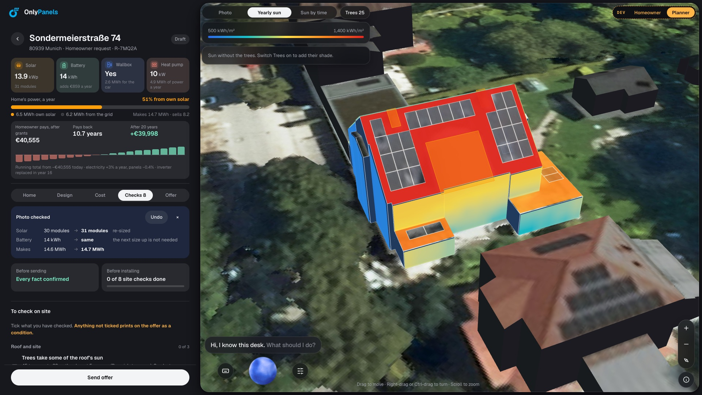
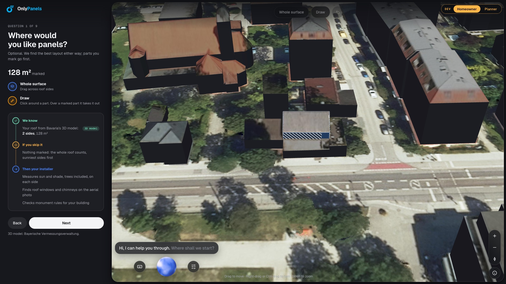

The experts knew what the request never said: the roof, the shade, the street. AI is smart enough. What it lacks is context.
3D roof, aerial photo, sun per roof side, tree shade, the neighbourhood's age and heating, district heating plans, monument rules, the installer's prices, grants and energy law. Fused before the planner opens the request.


On 276 projects it never saw: solar off by 2.65 kWp, against 3.06 for one design for every home and 4.02 for a rule of thumb, with none of the context above.
A first design and its price in minutes. The planner stays in control. The homeowner decides what is shared.